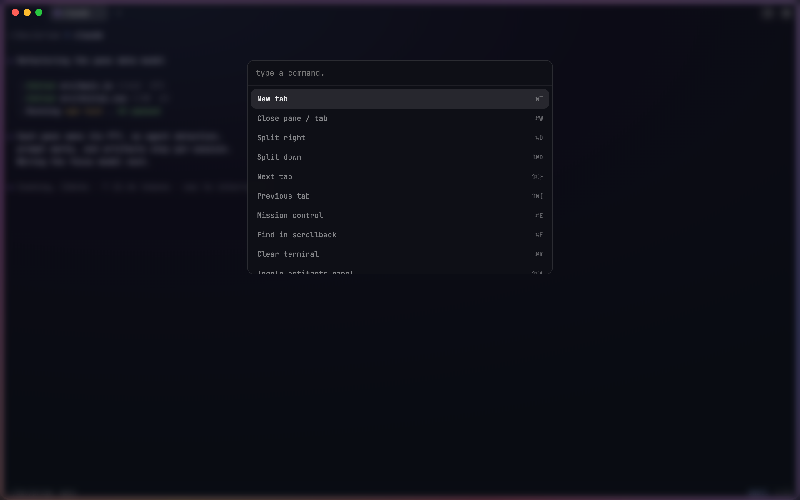

Terminals treat AI agents as just another process.
PRISM treats them as the main event.
Run a fleet
The window wears an animated glow while an agent is generating. Tabs show working, waiting, or idle at a glance, and long commands notify you when you're elsewhere. No more alt-tabbing to check "does it need me yet?"
See every file it touches
The artifacts rail opens itself the moment an agent starts writing files: every file it creates or edits, newest first, with the working folder on top. Click to reveal in Finder. Come back from coffee and know exactly what happened.
Let agents drive
A Unix socket API and a prism CLI in every shell. Agents can open panes, run commands beside themselves, read screens, and post notifications. The terminal becomes a tool the agent uses.
Every session at a glance.
One keystroke shows every tab as a live card: agent state and how long it's been there, working directory, git branch, and the last files touched. Click to jump in.
- working / waiting / idle states per session
- tab groups with names and colors, Chrome-style
- drag tabs between groups; click a chip to collapse a whole group

Agent on the left.
Proof on the right.
Split panes with independent shells and per-pane agent detection. The footer tracks your working directory, branch, and every command's exit status and duration through real shell integration, injected automatically, no dotfile edits.
- ⌘D split right, ⇧⌘D split down
- jump between prompts with ⌘↑ ⌘↓
- commands over 15s notify you when you're away
Ten themes over real glass.
Native macOS vibrancy with a tint you control. Pick themes from live preview cards: PRISM, Dark, Light, Dracula, Cyber Wave, Nord, One Dark, Solarized, Gruvbox, Catppuccin. Light mode restyles the entire chrome, not just the colors.

A palette for everything.
⌘P opens a fuzzy command palette with every action and every open session. ⌘F searches scrollback with live highlights. Standard terminal keys everywhere, and the full shortcut map lives one ⌘, away.
